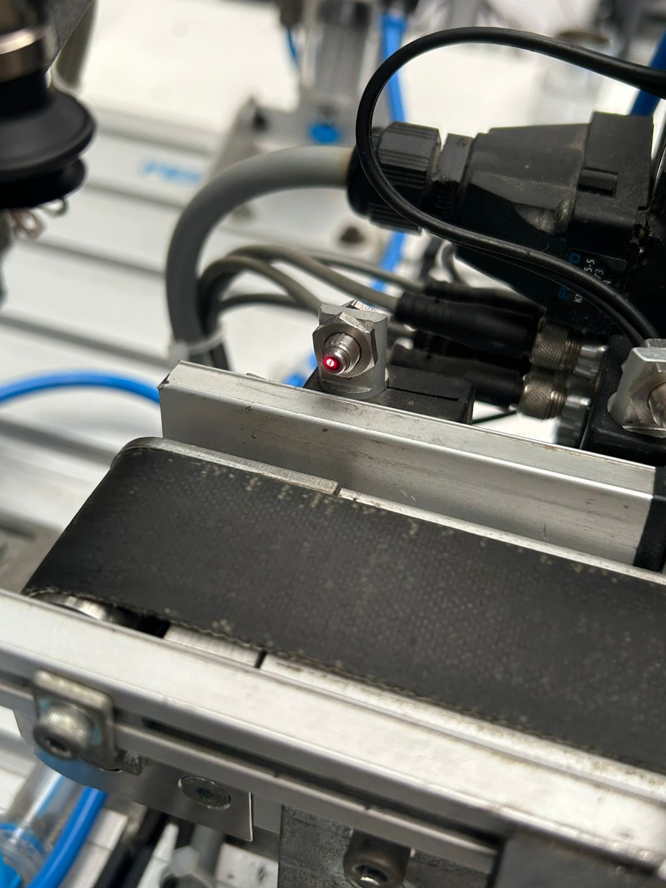
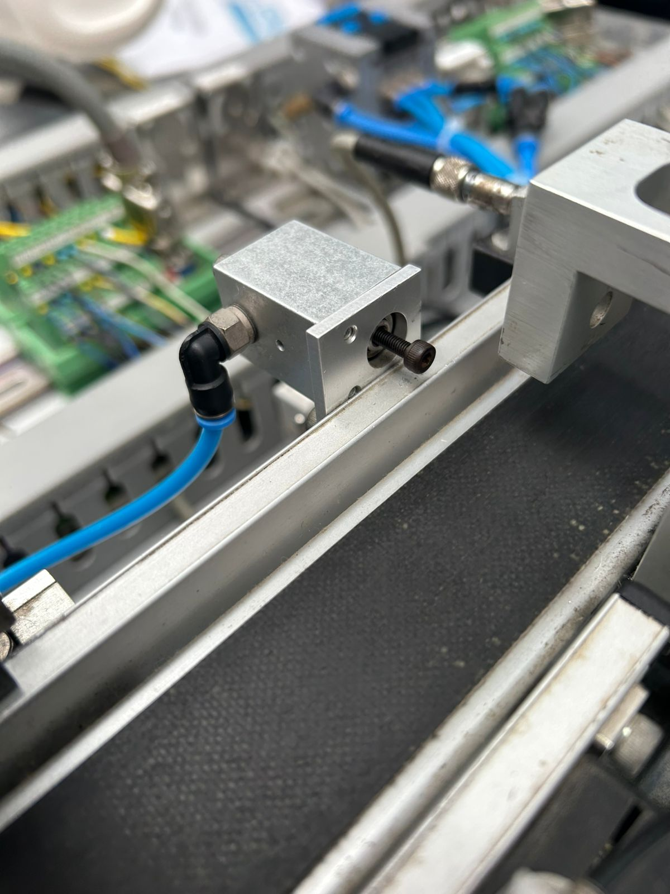
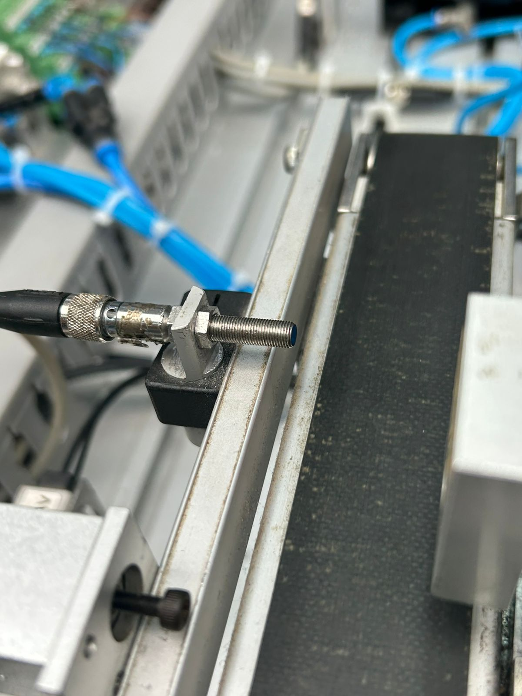
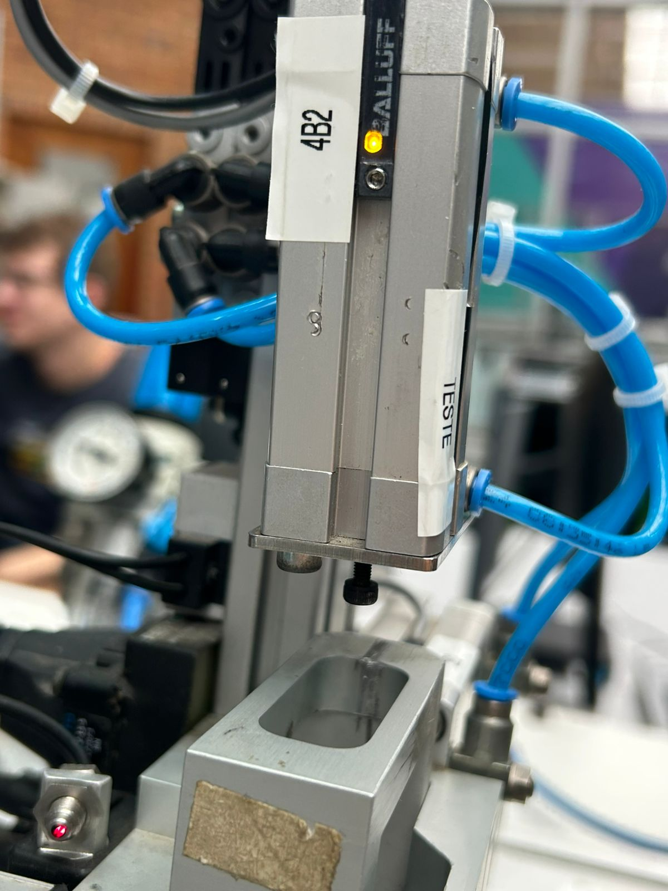
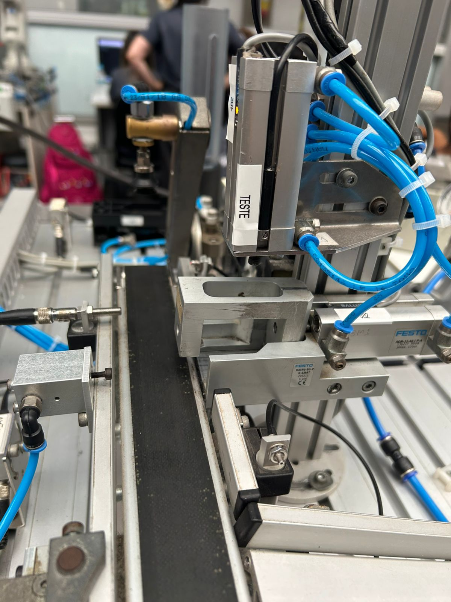
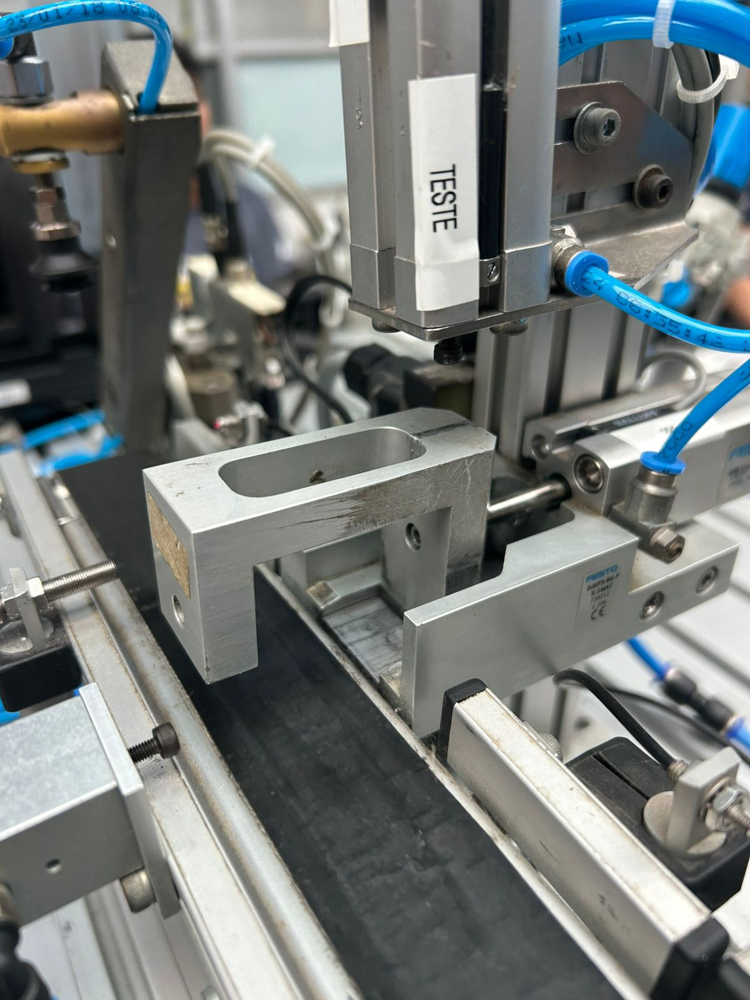
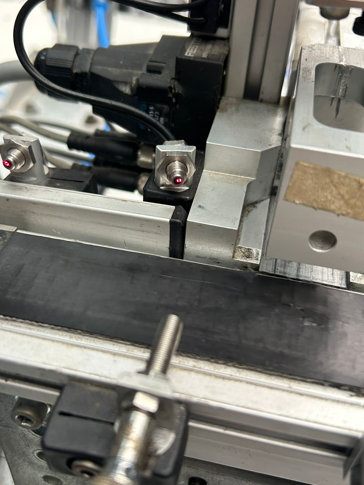
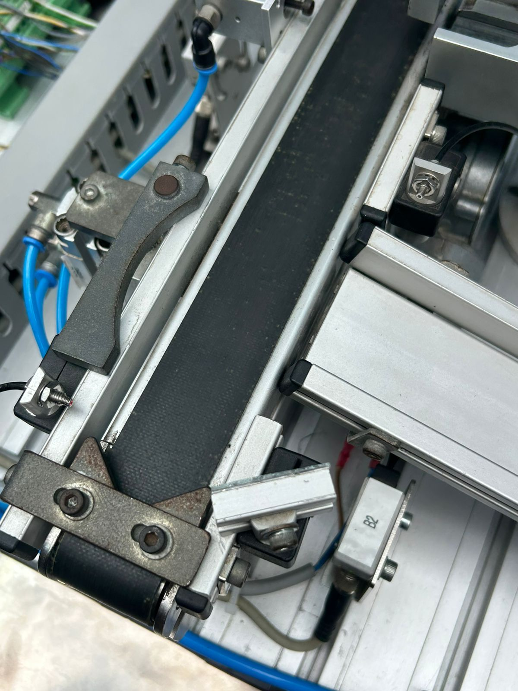
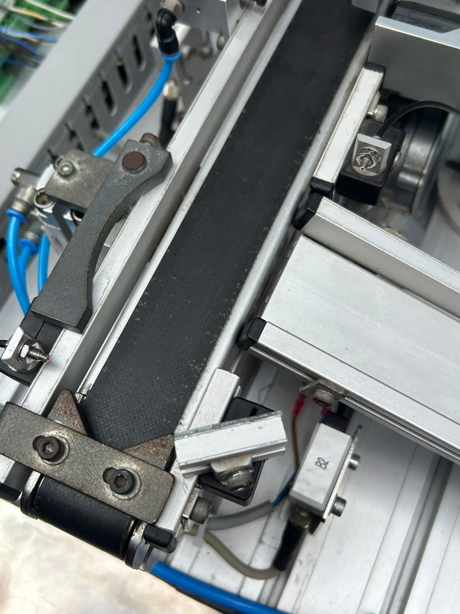

O ESP32 é o microcontrolador responsável por controlar todo o sistema da FESTO 4. Ele substitui um CLP tradicional, executando a lógica de automação industrial.
No sistema, ele realiza leitura de sensores, controle de atuadores e hospeda um servidor web para monitoramento.
As conexões do sistema são feitas através dos pinos GPIO do ESP32, que permitem a comunicação com sensores e atuadores.
Cada componente está ligado a um pino específico, garantindo controle individual e organização do sistema.
O sistema segue uma sequência baseada em eventos. Primeiro detecta a peça, depois analisa posição e material.
Com base nisso, o ESP32 decide qual atuador será acionado, utilizando máquina de estados (FSM).
Entradas são sensores conectados aos GPIOs que enviam sinais digitais.
Saídas controlam dispositivos como esteira e válvulas, acionadas via relés.
O ESP32 faz a integração entre o sistema físico e a lógica digital.

GPIO: 36
Detecta a chegada da peça

GPIO: 33
Usada para travar a peça para o atuador puxa-la

GPIO: 39
Diferencia metal e plástico

GPIO: 32
Verifica se a peça esta virada para cima ou para baixo

GPIO: 22
Movimenta a peça

GPIO: 19
Avanço e recuo do cilindro

GPIO: 18
Ativa sistema de leitura

GPIO: 21
Direciona peça

GPIO: 23
Controle adicional